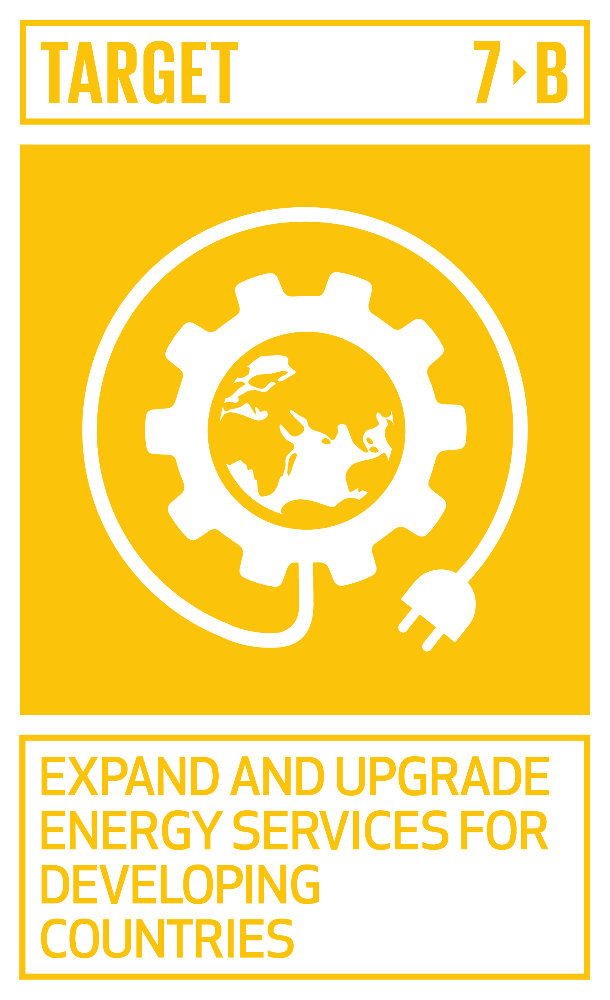

CODER SERIES Page
Coder Series is a hands on, mentoring and Industry related Coding Series. Preparing Kids,
Teens & Adults advance their learning in coding.
Coder Series is the Training Platform of Techiefy Ltd, UK. A Global Technology and Consulting firm
on a mission to provide Smart Technology Solutions, Consulting, Advisory & IT Training service to individuals and corporates.
Coder Series has been an opportunity for me to realise I actually
have a coder inside of me .
I also think it will make a great change to your child and even you like it did to me.

SDG goal 7: Sustanable Development Goals.
Also Coder Series enables you to become a leader and to help others and that is how after Coder Series I can
be a better leader than I was before.
The way that they do lessons is good because it lets you gradually move on
and then before you know it you have a website just like me !
It has been a wonderfull time making a website and it has been very easy.
So I hope you come to Coder Series.
Also,since there are marks in Coder Series it's easy to get them but hard to loose them.
Link to coder series website
 HOME
HOME  SDG7
SDG7 ACTION
ACTION  TECH
TECH MY IMPACT
MY IMPACT ABOUT ME
ABOUT ME